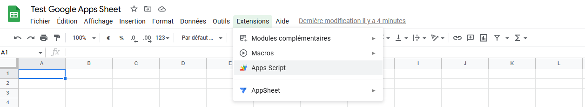
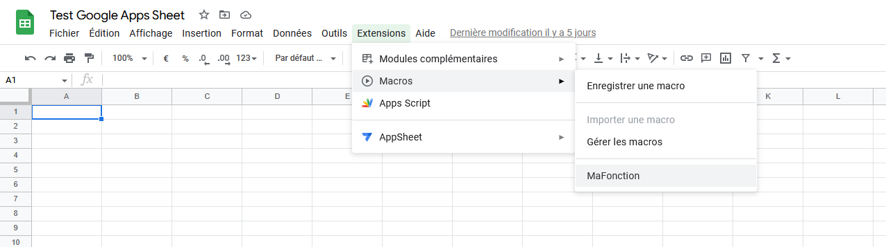

Google Apps Script
- Jean-Baptiste Durand
Google apps script ou comment automatiser les choses embêtantes dans un tableur
Table des matières
- Table des matières
- Qu'est ce que Google Apps Script ?
- Quelles sont les principales fonctionnalitées ?
- Exemple - Création d'un Tricount
- Liens Utiles
Qu'est ce que Google Apps Script ?
Google Apps Script est un outils permettant d'automatiser les autres outils de Google en effectuant des taches régulières, ou en réaction à l'interaction d'un utilisateur.
Nous nous concentrerons sur l'apport que peut faire Google Apps Script à Google Sheet, mais il est aussi possible d'automatiser Google Docs et Google Slides (↓ liens vers la documentation ↓)
Google Apps Script est un outils qui execute du JavaScript pour effectuer vos actions. Il est possible aussi d'ajouter des bibliothèques, mais attention, l'utilisation de bibliothèque ralentit l'execution du code.
Comment accéder Google Apps Script sur Google Sheet ?
Quelles sont les principales fonctionnalitées ?
Fonctions de calcul personnalisées
Google Sheet a une grande quantité de formules déjà définies pour faire des opérations simples, SOMME, MOYENNE, ...
Mais il existe un nombre limité de fonctions, Google Apps Script permet de créer la fonction qui répond à nos besoins.
Comment faire ?
On créer une fonction :
function MaFonction(mesParametres){
// Mes calculs
return resultat
}
et dans la case où on veut appliquer la fonction, on applique le calcul : =MaFonction(A1)
Automatiser plusieurs cases
Les fonctions de Google Apps Script n'offrent pas seulement la possibilité de modifier une unique case (une formule retourne une unique valeur qui est stockée dans une seule cellule).
Google Apps Script offre aussi la possibilité de gérer un grand nombre de cases, en accédant de manière indépendante à l'ensemble des cases du tableur.
Pour cela, il faut savoir comment accéder, en lecture et en écriture, aux cellules, à partir de la fonction.
Pour avoir la documentation exacte, je vous laisse vous référer aux liens.
Sinon voici quelques fonctions essentielles pour bien commencer 👇
Class Range
| Méthode | Description |
|---|---|
| clear() | Efface le contenu d'une plage de donnée |
| getA1Notation() | Récupère la description au format A1 |
| getValue() | Renvoie la valeur de la case ou de la case en haut à gauche si plage de données |
| getValues() | Renvoi l'ensemble des valeurs de la plage de données |
| getFormulas() | Idem mais la formule |
| getFormulas() | Idem mais les formules de la plage de données |
| setValue(value) | Modifie la valeur de la case ou de la case en haut à gauche si plage de données |
| setValues(values) | Modifie l'ensemble des valeurs de la plage de données |
| setFormulas(formula) | Idem mais la formule |
| setFormulas(formuulas) | Idem mais les formules de la plage de données |
Attention aux Formules
Les formules que l'ont get et que l'on set sont en anglais : la traduction faite pour Google Sheet (ex : SOMME), redevient en anglais (ex : SUM)
Class Sheet
| Méthode | Description |
|---|---|
| getRange(a1Notation) | Renvoi l'ensemble des cases |
| appendRow(rowContent) | Ajoute un ligne avec le contenu |
Déclencheur de fonction
Manuellement
Pour executer de manière manuelle la fonction, il faut d'abord l'importer,
Ensuite, on peut l'executer à tous moment :
Il vous sera demandé d'autoriser l'execution d'un script
Temporellement
Il est possible de déclencher une fonction de manière temporelle.
Voici un exemple, issue de la documentation de Google liens
function createTimeDrivenTriggers() {
// Trigger every 6 hours.
ScriptApp.newTrigger('myFunction')
.timeBased()
.everyHours(6)
.create();
// Trigger every Monday at 09:00.
ScriptApp.newTrigger('myFunction')
.timeBased()
.onWeekDay(ScriptApp.WeekDay.MONDAY)
.atHour(9)
.create();
}
J'ai pas cependant eu l'occasion d'aller en profondeur dans cette fonctionnalité, le laisse cette possibilité à quelqu'un d'autre pour un autre MON 😉
Listener
En créant une fonction ayant des noms spécifiques, il est possible de déclencher un script lors qu'un actiion se produit.
Les 2 principales fonctions sont :
- onEdit : executée à chaque fois qu'un utilisateur modifie une case
- onOpen : executée à chaque fois qu'un utlisateur (ayant des droits de modification) se connecte sur le google sheet.
exemple :
function onEdit(e){
//supprime le contenu de toute les cases modifiées (⊙ˍ⊙)
const range = e.range;
range.clear()
}
il existe quelques atres fonctions, comme d'habitude le détail dans les liens👇
Exemple - Création d'un Tricount
Liens Utiles
Documentation de Google sur l'utilisation de Google Apps Script sur ses différents produits :
Mon travail
Documentation
- Class Sheet : classe de feuille de calcul
- Class Range : classe d'un ou plusieurs cases
- Déclencheurs listener : Fonction listener
- Déclencheur temporel : Fonction exéctuée de manière régulière